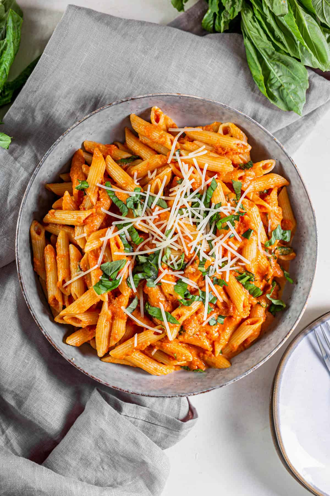

Tomato and Basil Pasta

Tomato and Basil Pasta
Dive into the simplicity of Italian cuisine with our Tomato Basil Pasta, a dish that revels in the fresh, vibrant flavors of its namesake ingredients.
Al dente strands of pasta capture pools of olive oil-infused sauce, where the bright tang of diced tomatoes dances with the aromatic whisper of garlic
and the sweet, peppery notes of fresh basil. Each forkful is a harmonious blend of the rustic and the refined, with the tomatoes' natural acidity beautifully
offset by the subtle richness of a golden olive oil. Crowned with a shower of Parmesan that melts into the warm pasta, this dish is a celebration of pure
flavors coming together to create a satisfying yet uncomplicated meal. It's Italian comfort food that brings the joy of a sun-dappled Mediterranean garden
right to your plate.
Ingredients
- 200g spaghetti or any pasta of your choice
- 2 tablespoons olive oil
- 3 cloves garlic, minced
- 400g can of diced tomatoes
- A handful of fresh basil leaves, torn
- Salt and pepper to taste
- Grated Parmesan cheese, for serving
Method
- Cook the pasta according to the package instructions until al dente. Drain and set aside.
- While the pasta cooks, heat the olive oil in a large pan over medium heat. Add the minced garlic and sauté until fragrant.
- Add the canned tomatoes (with juice), and let simmer for 10 minutes to thicken slightly.
- Stir in the torn basil and season with salt and pepper.
- Toss the cooked pasta into the sauce until well coated.
- Serve hot, garnished with grated Parmesan cheese.